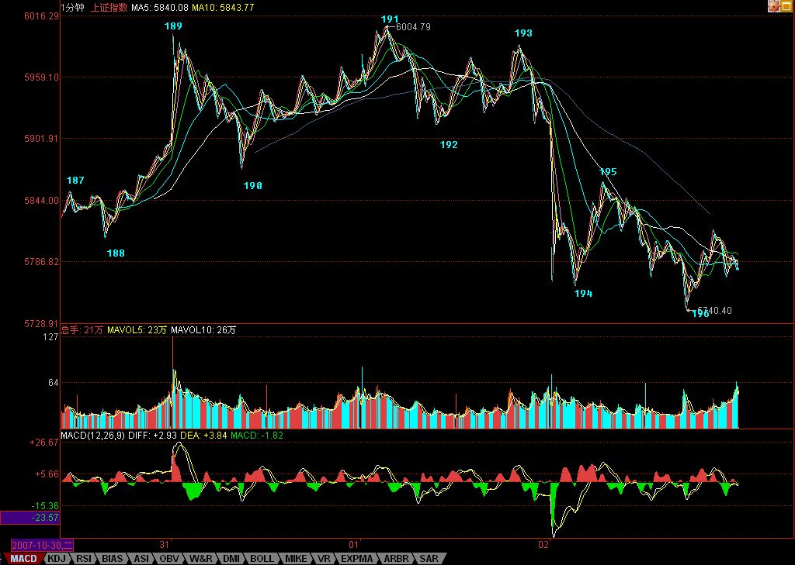

Walter:
- 本文中第一次提到了”中阴”的概念；
-
走势类型之中阴段:前一个走势类型结束，新的走势类型确立之前的这段；
- 对中阴段分析要结合前面刚刚完成的这段走势；
- 利用中枢震荡和第二类买卖的双重分析；
- 第三类买卖点是中阴段的结束点。
-
最牛的点就是从线段一直到年，同时都有标号的那个点，如果是顶，那就是百年大顶。
- 新的标号体系：
- Xn 代表线段的记号;
- Yn 代表 1 分钟的级别;
- Wn 代表 5 分钟的记号;
- Sn 代表 30 分钟记号;
-
日、周、月、季、年，分别也可以用 Rn、Zn、Mn、Jn、Nn 来表示。
-
中阴段操作：
- 技术好的，就在这个大的中枢震荡中中枢震荡操作一把;
- 技术不好的，等市场自己去选择，然后再决定操作。
正文
(2007-11-06 22:38:43)
原文网址：http://blog.sina.com.cn/s/blog_486e105c01000edy.html
本ID的理论，对所有的走势，进行了一个最明确的分解，所有的分解，本质上只有两类，就是延续与转折，用残酷一点的词语，就是生和死。
一个走势类型的死，必然意味着一个走势类型的生，走势，就在这样一个生死的轮回中，如同众生的生命，生死轮回不断。看明白了股票的走势，对人生，也大概应该有点领悟了。
一个走势类型确立后，同时就确认了前一个走势类型的死，同时也开始了自己面向死亡的生存。
如同众生的轮回生死，在死与生之间，有一段被称为中阴身的阶段，股票的走势，同样存在着这个阶段。如果说前一个走势类型的背驰或盘整背驰宣告了前一个走势类型的死亡，那么到新的走势类型确立，这里有一个模糊的如同中阴般的阶段。
要把握这阶段的走势，必须把前一段走势的部分走势结合起来分析。也就是说，前一段走势的业力在发挥着作用，这个业力与市场当下的新合力构成了最终决定市场方向的最终合力。
用一个例子，就很好地能说明这个问题。
下图中，191的背弛宣告前一走势类型的死亡。按道理，新的走势类型，是从191开始分析的，但这时候，新的走势类型连第一段线段都没走出来，甚至走到193的位置，也依然轮廓不明，因此，这时候，就是典型的中阴身阶段，必须借助前面189开始形成的中枢来完成分析与相应的操作。

如果从191开始，192、193都很难说有什么可依据的。当然，可以说193就是第二类卖点，这个自然没错，但站在189开始中枢的角度，这就存在一个中枢震荡的问题，这样，这个干瘪的第二类卖点，就有一个更大的可依靠的分析基础。一切关于中枢震荡的分析，都可以利用到关于192、193以及后面走势的分析中，这等于有了双重的分析保证。
当然，后面的195的第三类卖点，也是站在中阴阶段的角度说的。但这一点是一个中阴阶段与新的走势类型确立阶段的分界点，195出来以后，新的走势类型最开始的形态就确立了，也就是至少是一个线段的类下跌走势。这时候，分析的重心，就可以移到191开始的新走势类型上了。这时候，就可以基本在这个线段级别上，不用考虑191之前的事情。
但191之前的走势并不是没有用了，而是在更大级别上，例如在1分钟、5分钟等等级别上发挥作用了。191后面出现的走势，就和191之前的，结合出大级别的走势形态。
因此，当各位熟练以后，标记上就不一定要不断地标记下去了，例如，如果你是按1分钟级别操作的，那么，前面191个线段记号，可能就可以一下简化为10个不到的1分钟级别相关的记号。当191后面的走势演化出的1分钟走势结束后，这1分钟级别的记号才再增加一个，这样，记号的数目就很有限了。当然，如果是5分钟级别、30分钟、日线等等，就更少了。
为了方便明确起见，还是把记号的级别进行分类，例如，用Xn代表线段的记号，用Yn代表1分钟的级别，Wn代表5分钟的记号，Sn代表30分钟记号。日、周、月、季、年，分别也可以用Rn、Zn、Mn、Jn、Nn来表示。其中的n都是具体的数字，这样，所有的走势，都可以被这个标号体系所标记而清楚异常了。
例如，对于191这个点位，站在线段上，就是X191的标号，站在1分钟级别，可能就是某个Yn的标号，而189这个点，就只有线段的标号，这同时也显示了，191这点和189点的重要性是不同的。
什么是最牛的点？就是从线段一直到年，同时都有标号的那个点，如果是顶，那就是百年大顶，当然，是否有幸碰到这样的点，就看各位的运气了。
这个标号体系，不单单为了方便阅读、记号，首先就培养了各位一种综合的、系统的习惯。看一个走势，就要知道，不是单单是一个线段，而是在一个大的多层次系统里，这样才不会被每天的波动所迷失。
其次，这个标记的过程，意味着什么？既然线段有中阴阶段，那么其他级别当然也有。所以无论任何级别，在一个顶点出来后，都有对应级别长度的中阴阶段。
注意，一定要注意。为什么很多人逃了顶，最后还是被套住了；抄了底，最终还是没赚到钱，被震出来了。这就是被相应级别的中阴阶段给搞死的，而且，越大级别转折后的中阴阶段，越能搞死人。
就如同人的中阴，非人非鬼；行情走势的中阴阶段，也是多空齐杀，不断折腾转换。等最后转折确认时，就如同已经重新投胎，饭熟了，还找米，能有戏吗？
有些蠢人，经常在行情转折的中阴阶段，觉得世界又美好了，或者世界又恶劣了，结果都是被业力所牵引。
中阴阶段，无一例外，都是表现为不同级别的盘整（注意，这是只从截取这一阶段的形态说，并不是说新的走势类型一定是盘整）。也就是围绕前一走势的某一部分所构成的中枢震荡，即使是所谓的V型反转，也一样，只是震荡的区域回得更深而已。
其实任何转折，也就是第一类买卖点之后，都对应着某一级别的V型反转，例如，191的转折，190-191与191-192，其实就是一个V型反转，只是级别特别小。这个V型反转的级别，决定了中阴的级别与力度。例如，站在日线图上看6124点前后N天的走势，其实就是某级别的V型反转，然后就同时进入中阴阶段。
注意，中阴阶段结束后，不一定就是真正的反转，也可以是继续延续前一走势类型的方向，例如上涨+盘整+上涨，这样的结构是完全合理的。例如，人的中阴后，不一定就要变鬼之类的，也可以成所谓的神仙，如果你前一世是从鬼来的，鬼到人是上涨，中阴盘整后，从人到神仙，也是上涨。
但，上涨+盘整+下跌，上涨+下跌等等，同样是可能的选择。这时候，唯一正确的操作，只有一点：如果你技术好的，就在这个大的中枢震荡中中枢震荡操作一把，如果技术不好的，就拿着小板凳看戏，看它最后是升天还是下地狱，等市场自己去选择，然后再决定操作。
不过，站在本ID理论的角度，最大效率的，就是利用这个震荡去中枢震荡操作一把，学了本ID理论，就是要把技术练好，练好了，就自然不用整天小板凳了，上台自己票友一把不是更爽？
当然，没这本事的时候，还是别玩这一招，为什么？这就如同，在中阴身的阶段，还是可以去修炼去证悟，但你总不能因此说，我现在就不修炼了，等中阴再说。真等那时候，业力牵引着，你修什么鬼呀。
所以，有真本事，什么情况都不怕，都可以折腾。关键，是要有真本事。
5555点决战即将进入临界点 (2007-11-07 15:26:47)
原文网址：http://blog.sina.com.cn/s/blog_486e105c01000ee9.html
这个题目有点名不副实，因为这决战，对于空头来说，只是小战役，结果并不重要；但对于多头来说，就是决定生死存亡的。从6124点开始的行情转折中阴阶段，对于多头是垂死挣扎一下，还是干脆破罐子破摔，早死早投胎，很快，准确地说，最迟下周一前后就有答案了。
站在空头立场，本ID希望多头能挣扎挣扎，这样，会增加很多残忍的快感；当然，站在纯技术探讨的角度，多头最好的招数就是以退为进，用一个空头陷阱，把主动进攻的空头给废了。
由于目前的空头比较蠢，所以本ID不妨提醒，屠杀之前，一定要多点多头色彩，披着多头外衣的空头才是最有杀伤力的，在5555点上制造出一个大点级别中枢，然后再背后来一刀，把多头砍倒，踢下悬崖。
由于目前多头也比较蠢，所以本ID也不妨教教多头招数。从月线上，无非两种可能，就是本月确认顶分型，或者不确认。不确认，就是有包含关系或创新高。而目前5462点(注：10月最低点)，就是这个顶分型是否成立的关键，而跌破成立后，最关键是5月均线，目前在5300点附近。也就是说，多头完全可以在5月均线附近埋伏大部队，让空头先进攻，把分型给搞出来，然后反手把主动进攻的空头给废掉。
请回想一下，本ID在3600点，是如何完美地利用顶分型与5月均线来把空头给灭了。现在多头最完美的策略，依然是照搬本ID的老剧本。
不过，这些蠢蠢的多头，估计抄也抄不成样子，最后，可能还是要和5月均线吻别于狂乱的夜。现在的多头，如果这2年多不被攻破的5月均线竟然给你们弄丢了，那你们也别丢人了。不丢人最好的方法就是：早死早投胎。
有人可能要问：你究竟是多头还是空头，怎么又教多头又教空头如何干？
本ID很明确地说：本ID是那准备杀死空头的空头，一个不准备杀死空头的空头，不是好空头。见顶以后，就是一个空头面向死亡的生存过程。这时候当多头，将被空头蹂躏，而空头的命运，最终都是死。所以，唯一正确的就是，当一个随时准备把空头搞死的空头，里面的道理深着了，明白了，你对市场就有更深一步的了解。
短线技术上，5555点附近的新1分钟中枢形成，因此，这次6004点开始的走势，就明确形成1分钟的下跌形态，因此，短线该位置能否站住，就看这个中枢的表现了，看明白这个中枢后面的发展，也就看明白了这场多空拉锯的短线胜负了。
本ID的观点还是很明确，就是在这样一个中阴阶段，什么事情都可能发生，技术好的，可以充分利用这大型的中枢震荡玩抽血游戏。多空越分歧，意味着震荡的幅度机会越多，就越是本ID理论的天堂。至于没这本事的，就算了。
今天的中石油，如昨天所说，38元上线段底背驰后形成较强反弹，然后形成一个1分钟的中枢在40元上下，这是该股形成的第一个1分钟中枢，因此给后面的操作具有最重要的指导意义。后面的走势无非两种：一、以这1分钟中枢震荡扩展出大的中枢。二、这1分钟中枢不过是1分钟下跌走势的第一个中枢，最终将跌破该中枢形成1分钟中枢下移去完成1分钟级别的下跌。
具体操作，就按实际走势的选择来决定。例如，如果你在今天背驰时介入部分仓位的，就可以开始利用后面走势的波动，把成本逐步降低。
最近天天说石油，主要是以此为基础，从最开始把一个股票的走势的生长是如何演进的给教科书一番，各位顺便就可以看到，个股的分析和大盘的分析没什么不同，都一样的。
今天下午晚上都有事，明天收盘马上有事，解盘要到晚上了，先说明一下。
先下，再见。
血凝心裂，苍天啊！ (2007-11-07 22:19:36)
原文网址：http://blog.sina.com.cn/s/blog_486e105c01000eei.html
有些事情，真是不该知道，知道了，只能让人绝望。注意，本ID可不是说股票，股票算什么？
有些事情，真是超越了一切底线，让人血凝心裂，苍天啊！
酒后，并不一定能真言。不能言，七步诗。苹果、苹果，我的苹果。
如期决战，多头不堪一击 (2007-11-08 22:21:05)
原文网址：http://blog.sina.com.cn/s/blog_486e105c01000eeu.html
对不起，回来晚了，把解盘补上。
昨天说，决战进入临界点，最迟周一有结果。结果是，多头如此不堪一击，太令人失望了。这证明了本ID的一个断言：空头是心急的。而昨天，本ID给多头编的5月均线大埋伏剧本，是否如本ID所担心的那样：“这些蠢蠢的多头，估计抄也抄不成样子，最后，可能还是要和5月均线吻别于狂乱的夜”，很快也有答案了。
前几天，还有多头叫嚣，质问本ID不是说要至少跌1000点吗，为什么还不跌？现在，这个本ID布置的任务，确实有点没完成，本ID对演员们的表现也很不满意，那就继续努力吧。别心急，小板凳坐好，别到处跑动，现在，1000点只完成了800点，空头多头演员们，努力！加油！
现在，5462点到5555点颈线位置，将是中线反抽最关键的位置，不能重新上去，那么跌势将持续到这跌的业力耗尽的一天，本ID可从来没说过1000点外就没有空间，本ID只是说，没有1000点的回跌空间，这做空不过瘾，没空间，不好玩。所以，1000点这小康水平达到后，我们还可以有更高的现代化目标，这难道有什么问题？
今天不爽的，基本上有两种人：一、牛人，觉得自己很牛，可以短线，有天赋。本ID说认清自己，冷静加冷静。认清什么？就是你是不是牛人。牛人，不在乎什么线，但不是，就别累着自己。本ID不早给了所有非牛人一个最好的选择：小板凳？二、大牛人。这种人，以被套为光荣，号称牛市就要中长线，就要持有。就算那股票从300到3元，也要持有，也要中长线，这种大牛人，本ID没什么可说的。有人喜欢电梯，上上下下享受，本ID一点意见都没有，慢慢享受去吧，还有你爽的时候。
明天、周一，5月均线能否有埋伏，埋伏能否有效，很快就有答案了。如果是本ID搞的，本ID当然有信心，但现在，本ID又不当多头了，和3600点那时候不同了，本ID可不想为任何人担保什么。
现在，多头短线的问题，是这次跌破，是否能尽快拉回去，否则，一旦确认颈线跌破，那么，按照双顶的量度跌幅，你觉得该到哪里呢？
本ID很想仁慈地安慰一下今天受苦的人，但本ID最终决定还是不这样干，因为这样只能害人。市场从来不仁慈，本ID该说的也早说了，既然，今天痛苦的，都是大小牛人，那么就继续梅花香自苦寒来去吧，这大概是牛人爱干的活。
如果想真学点什么的，请复习一下本ID这帖子” 2007年末，资金与政策博弈下的走势分析 2007-09-17 00:41:48 ”，如果能学点什么，本ID觉得，就没必要学梅花了。股市里，不需要学梅花，不需要苦寒来，股市只需要智慧。
技术高的，可以关注这6004点开始的1分钟下跌的背驰，然后将有一个大反弹；如果技术不高的，还是继续小板凳吧。
先下，再见。
5月均线大埋伏剧本如期上演 (2007-11-09 15:20:08)
原文网址：http://blog.sina.com.cn/s/blog_486e105c01000eey.html
今天行情没什么可说的，就本ID前两天已经公布的5月均线大埋伏剧本的现场版。不过，说老实话，同样的剧本，不同的导演，效果当然是不同。今天这种演出水平，显然不是太令人满意的，所以本ID一早就给了一个定性：“这些蠢蠢的多头，估计抄也抄不成样子”，至于是否会“最后，可能还是要和5月均线吻别于狂乱的夜”，很快也会有答案了。
当然，在这个答案出来之前，无论答案如何，都会有一个对前面5462-5555点颈线位置的反抽确认过程，这是例行手续，能重新上去，就证明多头这次的5月均线大埋伏剧本没演砸，否则，这戏就要退票，重新开始空头的魔兽表演。
空头这头魔兽，最终肯定要被本ID砍了劈了，但如果多头不争气，剧本演砸了，首先被砍被劈的一定就是多头。
本ID这种要砍死空头的空头，目前最爱干的事情就是，多头伏击时，本ID也在后面伏击着，多头掩杀，本ID就跟着呐喊，等多头冲得没力，空头开始反击，本ID就在后面连续绞杀，把多头变成少头。
有人可能说，你这样也太无耻了。本ID只知道，在资本市场里，最无耻的行为就是亏钱、被套，只要你在市场上，远离这种行为，那你自然就是一个高尚的人、脱离了低级趣味的人，可以鄙视所有宣称你无耻的人的人。
这如同打仗，蒋光头就是最无耻的人，占尽优势最终还被赶到岛上洗海水浴去了，这世界上还有比这更无耻的吗？无论多少无耻的人给他找一万条无耻的理由，也改变不了他是最无耻的结论。打仗，最终只看结果，别说任何理由。输了，磨墙去，JJWW没用。
市场比打仗更无情，打仗输了，还会有无耻文人，忽悠点这英雄那豪杰的，蒙骗一下少年儿童。市场输了，连尸骨都不会有人替你收。有人喜欢温情，喜欢有人说软话温暖一下破碎的心，那是有病。这种人，在市场中永远只有一种命运：死。
中石油在38附近又有一个新的1分钟中枢，不过这个中枢与上面一个太近了，极有可能就2合一地扩展成更大级别的中枢，当然，实际走势，由市场决定。
大盘没什么可说的，5月均线埋伏后，就看反抽力度，十分简单，没必要多说了。
个股方面，由于人气涣散，最近能逆市的，更多是小市值的低价股，年未，重组闹剧又到上演的时候，这是可多多关注的。至于，中字头，一定还是市场的重心，不过一定要踏稳节奏才可以去短差，否则就会被人绞杀。
不想说了，一到周末，股票就成了最无趣的东西。周末，腐败去，发展晚上经济去、为吃喝玩乐经济贡献去，千万别股票去了。如果什么都不想干，就打坐吧。
先下，再见。
略论国家经济意志的市场化体现 (2007-11-11 17:13:00)
原文网址：http://blog.sina.com.cn/s/blog_486e105c01000efz.html
在计划经济条件下，国家的经济意志，可以有多种宣示的渠道，惟独缺乏的是市场化。而在市场经济条件下，一味通过行政、政策等硬方式进行调控，显示是不合时宜的。而在市场化手段下，国有股份、外汇储备、社保资金等等国家资产的应用，不可避免地将体现国家的经济意志，而如何处理好其中的关系，确实值得认真探索与研究，这关系到国家的经济安全与经济发展战略的最终实现。
国家的经济意志，不是一时的盲动，也不能基于某种短线利益或道德冲动。国家的经济意志，必须建立在国家战略的前瞻性、全面性与系统性基础上。没有前瞻性，如同散户跟庄的思维，跟着别的大国思路跑，这样是绝对不行的。中国是一个大国，其经济意志必须有着大国的气度，必须能对世界经济与政治格局产生中国式的引力，反映出中国式的声音，最终实现中国式的战略意图。而没有全面性，同样不行。中国的国家经济意志，其战略取向必须是全面的，而不是为了某时某地某人的利益，其最终的经济利益，必须能体现且实现全体国民最大最终的利益。至于系统性，表明了中国的国家经济意志，必须也必然现实地体现为一个有着严密内在联系、多层次建构、具有可操作性、可实现性的有机系统。
目前，单单从具体资产的实际运用上看，国有股份，已经是股市中最大的绝对控制力量，目前的指数，已经完全是中字头股票的天下；而社保基金，最终将在国有股份划转、减持与最终运作中扮演极为重要的角色；而中投公司的成立，使得外汇储备的应用在内外资本市场中的协同性与隐含的战略性至少有了超越波段性质的重要意义。
但国家的经济意志，还不单单反应在具体的股票或市场化操作上。更重要的是，绝不能把国家经济意志的体现，完全退化成如同庄家控盘的操作模式，这是极为危险的。国家的经济意志，应该成为市场中一个重要的甚至是最重要的分力，但不能成为市场合力本身，更不能成为市场的唯一力量。一旦向这种危险的境地演化，那么，所谓国家经济意志的市场化体现，就会成为一句空话。这种所谓的市场化体现，也将会成为摧毁市场基础的力量。
此外，国家的经济意志，还必须体现在对国家经济资源的保护上。国家的经济资源，不单单包括狭义的实体、实物上的资源，还包括在虚拟经济条件下一切能产生市场、资本等效应的资源。例如，中国的优秀公司，就是中国资本市场的最大经济资源。如何合理利用这些资源，而不是让其贱卖、外流以及被短期利益所过分开发，这是一个十分现实且有着诸多教训的重大问题。
而站在资本运用层面，太过市场化、太过老鼠仓化的基金已不可能单独成为国家意志的经济化体现，必须有一种新的绝对性平衡力量来加强调节。既然在实体层面，国家对关系国民生计的产业要绝对控股，那么，在虚拟经济层面，这种绝对控股性是无用质疑的。也就是说，这种绝对控股性，还必然包括对股票总体走势的宏观控制。
国家逐步淡出政策层面的硬调控，必须也必然会在经济层面掌握一个绝对的调控力量，否则，资金对政策的挑战就会出现无法控制的局面，这是完全不符合中国国情的。加强国家对经济的调控，包括实体与虚拟两层面。而国家对虚拟层面经济化调控领导地位的加强，是一个必须尽快解决的问题。